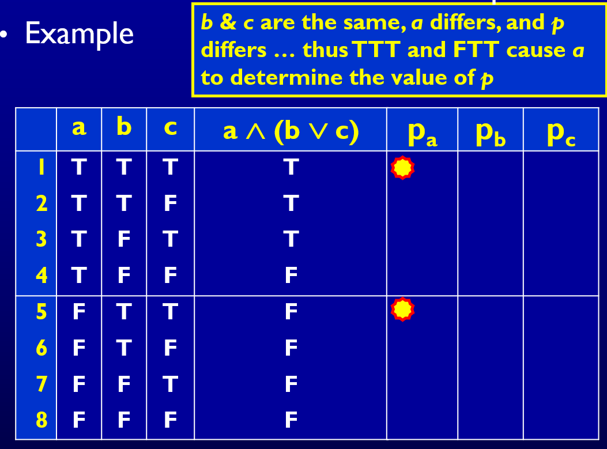

逻辑覆盖｜逻辑覆盖标准
逻辑覆盖
- 本章会讲述两种互补的逻辑测试方法：
- 语义逻辑覆盖(semantic logic coverage)
- 语法逻辑覆盖(syntactic logic coverage)
有效的语义逻辑覆盖标准
- 相关术语与符号：此处使用形式化的逻辑表达式
- 谓词(predicate) 是结果为布尔值的表达式
- 谓词可以包含：
- 布尔变量
- 包含操作符{} 的非布尔变量
- 函数返回值
- 谓词可以包含：
- 谓词内部的逻辑用逻辑操作符创建
- 子句(clause) 是不包含任何逻辑操作符的谓词
- 谓词(predicate) 是结果为布尔值的表达式
- 谓词的来源
- 程序中的决策
- UML 活动图中的决策
- 正式或非正式的需求
- SQL 查询
- 有限状态机
简单的逻辑覆盖准则
-
在测试中使用谓词的方法：
- 将软件建立成一个或多个谓词的模型
- 要求测试以满足某些子句的组合
-
缩写
- P 定义为一组谓词
- C 定义为 P 中谓词的一组子句
- 对于 p P, Cp 是 p 中的子句
- 谓词覆盖(Predicate Coverage, PC)
- 对于每个 pP, TR 包含两个需求：p 的结果为真和 p 的结果为假
当谓词来自边上的条件时，这等同于边覆盖
该准则的一个明显缺点是不能测试单独的子句
- 字句覆盖(Clause Coverage, CC)
- 对于每个 c C, TR 包括两个需求：c 的结果为真和 c 的结果为假
字句覆盖也被称为条件覆盖
字句覆盖不包含谓词覆盖，谓词覆盖也不包含字句覆盖
- 组合覆盖(Combinatorial Coverage, CoC)
- 对于每个 p P, TR 的测试需求要求 Cp 中子句的结果覆盖
真值取值的每种可能的组合 - 组合覆盖也被称为多项覆盖(multiple condition coverage)
- 对于每个 p P, TR 的测试需求要求 Cp 中子句的结果覆盖
- 一个具有 n 条独立子句的谓词 p 会有 2n 个可能的真值赋值，因此组合覆盖对拥有超过一定数量子句的谓词来说很难使用且不切实际
有效子句覆盖
-
子句测试有一个深层次的问题：子句的值的改变可能并不会影响到谓词的值
- 为了确切测试子句的结果，子句应该是可以影响谓词结果的条件，即这个子句 决定 了谓词
-
决定(determination)
- 主子句 ci 是我们关注的子句，其余剩下的子句 cj, ji 是次子句
- 给定谓词 p 中的一条主子句 ci, 如果次子句 cj p, ji 的某些特定取值可以使得在改变 ci 的真值时也会改变 p 的真值，我们说 ci 决定 p
- 这个定义
不要求ci = p
- 有效子句覆盖(Active Clause Coverage, ACC)
- 对于每个 p P 和每条主子句 ci Cp, 选择次子句 cj, j i, 使得 ci 决定 p。对于每个 ci, TR 包括两个测试需求：ci 的取值结果为真和 ci 的取值结果为假
- 一个具有 n 条子句的谓词满足主子句覆盖需要至少 n 个测试用例，但是不会超过 2n 个测试用例
ACC 与早期论文中描述的另一种技术 MCDC 几乎一样，但是 MCDC 的定义有一些歧义：
当主子句 ci 为真或为假的时候，其他的次子句 cj 是否需要取同样的值？
为了解决这个歧义，产生了主子句覆盖的三种不同的形式
- 广义有效子句覆盖(General Active Clause Coverage, GACC)
- 对于每个 p P 和每条主子句 ci Cp, 选择次子句 cj, j i, 使得 ci 决定 p。对于每个 ci, TR 包括两个测试需求：ci 的取值结果为真和 ci 的取值结果为假。
- 当 ci 为真或为假的时候，次子句 cj 的取值 不必相同
遗憾的是，广义有效子句覆盖不包含谓词覆盖
- 限制性有效子句覆盖(Restricted Active Clause Coverage, RACC)
- 对于每个 p P 和每条主子句 ci Cp, 选择次子句 cj, j i, 使得 ci 决定 p。对于每个 ci, TR 包括两个测试需求：ci 的取值结果为真和 ci 的取值结果为假。
- 当 ci 为真或为假的时候，次子句 cj 的取值 必须相同
RACC 的定义没有明确说谓词的取值必须要与 ci 的每个取值，但实际上 RACC 的测试用例会导致谓词不同于主子句的每个取值
RACC 经常导致不可行的测试需求，这种限制没有逻辑上的原因
- 相关性有效子句覆盖(Correlated Active Clause Coverage, CACC)
- 对于每个 p P 和每条主子句 ci Cp, 选择次子句 cj, j i, 使得 ci 决定 p。对于每个 ci, TR 包括两个测试需求：ci 的取值结果为真和 ci 的取值结果为假。
- 次子句 cj 的取值必须使得主子句 ci 取一种值时 p 的结果为真，而主子句取另一种值时 p 的结果为假
- 隐式地允许次要子句具有不同的值
- 显式满足(子项)谓词覆盖
无效子句覆盖
- 有效子句覆盖着重确保主子句影响谓词
- 无效子句覆盖确保的是，当改变那些本不应该影响谓词的主子句的值时，在实际上也不会影响谓词的结果
- 无效子句覆盖(Inactive Clause Coverage, ICC)
- 对于每个 p P 和每条主子句 ci Cp, 选择次子句 cj, j i, 使得 ci 不决定 p。对于每个 ci, TR 包括四个测试需求：
- ci 的取值结果为真并且 p 的结果为真
- ci 的取值结果为假并且 p 的结果为真
- ci 的取值结果为真并且 p 的结果为假
- ci 的取值结果为假并且 p 的结果为假
- 对于每个 p P 和每条主子句 ci Cp, 选择次子句 cj, j i, 使得 ci 不决定 p。对于每个 ci, TR 包括四个测试需求：
虽然无效子句覆盖(ICC)和 ACC 一样有相同的歧义之处，但是只能进一步定于两种形式，即广义无效子句覆盖(GICC) 和限制性无效子句覆盖(RICC)
相关性的概念对于无效子句不适用，因为 ci 不能决定 p, 所以 ci 与 p 不相关
此外，根据无效子句覆盖的定义，其所有的形式都可以 保证满足谓词覆盖
-
广义无效子句覆盖(General Inactive Clause Coverage, GICC)
- 对于每个 p P 和每条主子句 ci Cp, 选择次子句 cj, j i, 使得 ci 不决定 p。对于每个 ci, TR 包括四个测试需求：
- ci 的取值结果为真并且 p 的结果为真
- ci 的取值结果为假并且 p 的结果为真
- ci 的取值结果为真并且 p 的结果为假
- ci 的取值结果为假并且 p 的结果为假
- 次子句 cj 在这种情况下的取值可以不同
- 对于每个 p P 和每条主子句 ci Cp, 选择次子句 cj, j i, 使得 ci 不决定 p。对于每个 ci, TR 包括四个测试需求：
-
限制性无效子句覆盖(Restricted Inactive Clause Coverage, RICC)
- 对于每个 p P 和每条主子句 ci Cp, 选择次子句 cj, j i, 使得 ci 不决定 p。对于每个 ci, TR 包括四个测试需求：
- ci 的取值结果为真并且 p 的结果为真
- ci 的取值结果为假并且 p 的结果为真
- ci 的取值结果为真并且 p 的结果为假
- ci 的取值结果为假并且 p 的结果为假
- 次子句 cj 在这[(1), (3)]和[(2), (4)]情况下的取值必须相同
- 对于每个 p P 和每条主子句 ci Cp, 选择次子句 cj, j i, 使得 ci 不决定 p。对于每个 ci, TR 包括四个测试需求：
不可行性和包含(Infeasibility & Subsumption)
- 不可行问题之所以经常存在是因为字句之间有时是相互联系的，选择一个子句的真值可能会影响另一个子句的真值
-
与基于图的标准一样，不可行的测试需求必须被识别和忽略
- 然而难点在于确认测试需求是真的不可行还是只是很难满足。理论上说，识别不可行被证明是一个不可判定问题
-
处理一些不可行的测试需求更好的方案是找到那些不可行的需求在一个被包含的覆盖准则中所对应的需求
- 例如，如果对于谓词 p 中的子句 a, RACC 的测试需求是不可行的（由于子句间额外的约束），而 CACC（被包含的覆盖准则）的测试需求是可行的，那么使用 CACC 可行的测试需求来代替 RACC 中不可行的测试需求是合理的
- 这个方法和图覆盖中最大限度游历的概念相似
- 下图显示了逻辑表达式准则之间的包含关系
- 注意，无效子句覆盖准则不包含有效子句覆盖的任何准则，反之亦然
让子句决定谓词
- 这个小节处理的问题是如何对次子句 cj 取值才能保证主子句 ci 可以决定 p 的结果
基于决定的直接定义的方法
- 对于包含子句（或是布尔变量）c 的谓词 p
- pc=true 表示谓词 p 中每处 c 都由真来替换
- pc=false 表示谓词 p 中每处 c 都由假来替换
- 假设没有重复，即 p 只包含一处 c，用 异或操作符 将这两个表达式连接起来
- 显然 pc 描述的正是 c 的取值决定 p 所需的条件
- 即如果 pc 中的子句取值使得 pc 为真，那么 c 的真值就可以决定 p 的真值；如果 pc 中的子句取值使得 pc 为假，那么 p 的真值与 c 所取的真值是相互独立的
要使主子句 a 决定谓词 p，唯一的次子句 b 必须为假
- 这个例子给出的结果不唯一，它指出了 CACC 和 RACC 之间的关键区别
- 有三种选择可以让 的结果为真：
- b = c = false
- b = false, c = true
- b = true, c = false
- 对于相关性有效子句覆盖，当 a 为真时，可以选择一对值，当 a 为假时可以选择另一对
- 对于限制性有效子句覆盖，当 a 为真和假时，必须选取相同的值
- 有三种选择可以让 的结果为真：
a 总是决定这个谓词的值
b 是无关子句
- 布尔代数定律
基于表格的计算决定的快捷方法
- 这种方法是基于真值表的
- 首先为一个谓词列出完整的真值表，该表中包含一列来显示谓词的最后结果
- 对于表中的任意两行，如果它们的次子句取值相同但主子句取值不同，那么我们检查谓词的结果是否不同
- 如果谓词的结果不同，那么这两行可以使主子句决定谓词的结果

本博客所有文章除特别声明外，均采用 CC BY-SA 4.0 协议 ，转载请注明出处！